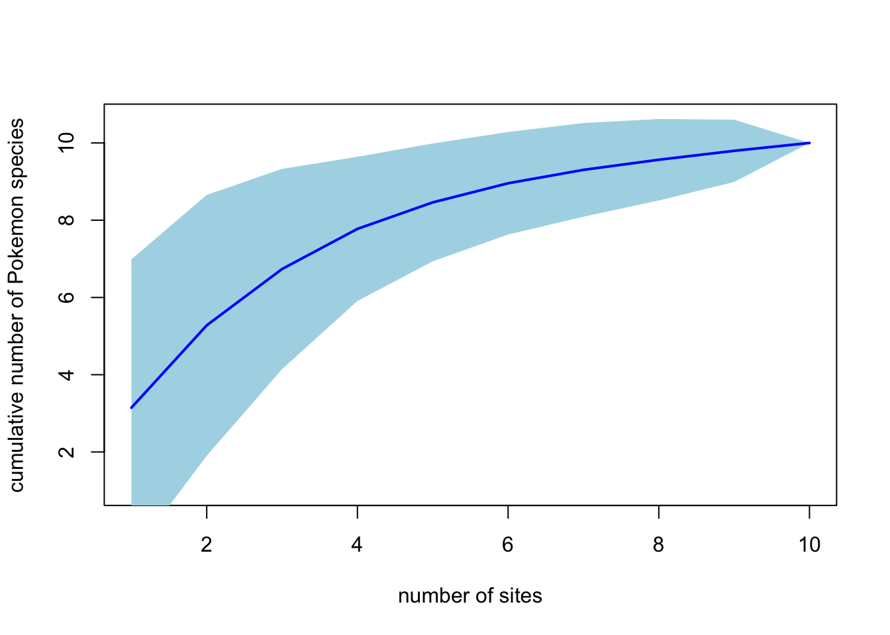
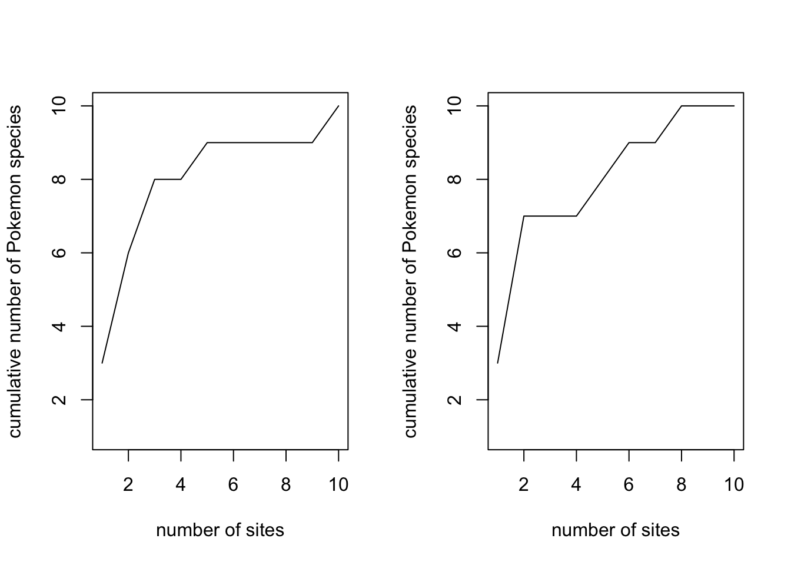

Practical 3 Diversity Indices in R
The aims of this practical are to learn how to use R to estimate diversity indices and species accumulation curves. You will need some of these functions to complete your paleoecology assessment.
We will be using some made up data about Pokemon sightings within the Museum.
REMEMBER
- Download all of the data for the practical into a folder somewhere on your computer.
- Set your working directory to this folder.
- Start a new script for this practical.
You will also need to install the following packages:
veganpicante
3.1 What are diversity indices?
A diversity index is a measure of the “diversity” of an area. Diversity could be measured in terms of the numbers of species (or higher taxonomic groupings like genera, families, phyla), or other metrics such as number of haplotypes if you’re interested in genetic diversity, or number of functional groups for studies of functional diversity.
Many diversity indices also account for how evenly spread these different types are. For example, they identify whether there are there five species with 10 individuals of each (even), or five species with one species with 96 individuals and four species with one individual each (uneven). These differences in evenness may be as important for ecosystem function as the number of species.
There are about a million different diversity indices (OK this is a slight exaggeration but there are a lot check out the vegan package vignette and search for “diversity”), and different people prefer different measures for different questions. Amusingly the vegan helpfile for the function diversify states “these indices are all very closely related (Hill 1973), and there is no reason to despise one more than others (but if you are a graduate student, don’t drag me in, but obey your Professor’s orders)”.
3.1.1 \(\alpha\), \(\beta\) and \(\gamma\) diversity (Whittaker 1960, 1972)
- \(\alpha\) diversity is the mean species diversity in sites or habitats at a local scale.
- \(\beta\) diversity is turnover in \(\alpha\) diversity among different sites.
- \(\gamma\) gamma diversity is diversity at the landscape level.
For example, if we count the species in Hyde Park and Green Park, we’d have a measure of \(\alpha\) diversity for each. \(\beta\) diversity would measure the difference between species found in Hyde Park and those found in Green Park. \(\gamma\) diversity would be all the species found across London.
\(\beta\) diversity is the hardest to measure, and there are far more metrics for measuring this than any others.
3.2 Practical example using Pokemon…
We’re going to play around with some invented data on sampling sites within the Museum and the Pokemon we’ve managed to find there (don’t complain about my unlikely Pokemon combinations, they’re just made up data with Pokemon names rather than A, B, C etc!).

Who doesn’t love a practical handout being interrupted by an enormous Pikachu?
# Load picante and vegan
library(picante)
library(vegan)Next read in the data and take a look at it.
pokemon <- read.csv("pokemon_communities.csv")# Look at the data
pokemonFor the vegan functions to work you need a matrix where the columns are the species names, the rows are the communities, and the contents of the matrix are the numbers of each species found at each site (or presence absence data as 0s and 1s). We can use the sample2matrix function in picante to do this easily.
Note that this only works if your first variable is the name of the site, your second is abundance and your third is the names of the species present.
pokemon.matrix <- sample2matrix(pokemon)
# Look at the matrix
pokemon.matrix## Bulbasaur Caterpie Charmander Pidgey Pikachu Psyduck Rattata
## site01 5 0 3 0 0 0 0
## site02 0 0 0 6 0 0 6
## site03 1 0 1 1 1 0 10
## site04 0 0 2 0 1 0 0
## site05 0 2 0 4 0 0 3
## site06 0 0 0 0 0 1 0
## site07 3 3 3 3 0 0 3
## site08 5 5 0 0 0 0 0
## site09 0 0 0 0 0 0 0
## site10 0 0 6 3 0 0 0
## Spearow Squirtle Zubat
## site01 0 0 0
## site02 1 0 0
## site03 1 0 0
## site04 0 0 0
## site05 0 3 0
## site06 0 0 0
## site07 3 3 0
## site08 0 0 0
## site09 0 10 0
## site10 0 0 23.3 Species diversity indices
3.3.1 \(\alpha\) diversity
The simplest measure of \(\alpha\) diversity is just the number of species in each site. You can easily extract this as follows.
specnumber(pokemon.matrix)## site01 site02 site03 site04 site05 site06 site07 site08 site09 site10
## 2 3 6 2 4 1 7 2 1 3Simpson’s and Shannon’s diversity indices can be estimated using the function diversity.
# Simpson's index
diversity(pokemon.matrix, index = "simpson")## site01 site02 site03 site04 site05 site06 site07
## 0.4687500 0.5680473 0.5333333 0.4444444 0.7361111 0.0000000 0.8571429
## site08 site09 site10
## 0.5000000 0.0000000 0.5950413# Shannon's index
diversity(pokemon.matrix, index = "shannon")## site01 site02 site03 site04 site05 site06 site07
## 0.6615632 0.9110175 1.1729935 0.6365142 1.3579779 0.0000000 1.9459101
## site08 site09 site10
## 0.6931472 0.0000000 0.99492363.3.2 \(\beta\) diversity
The function betadiver allows you to estimate all the \(\beta\) diversity indices mentioned in Koleff et al. 2003. For help on which indices are included type:
betadiver(help=TRUE)## 1 "w" = (b+c)/(2*a+b+c)
## 2 "-1" = (b+c)/(2*a+b+c)
## 3 "c" = (b+c)/2
## 4 "wb" = b+c
## 5 "r" = 2*b*c/((a+b+c)^2-2*b*c)
## 6 "I" = log(2*a+b+c) - 2*a*log(2)/(2*a+b+c) - ((a+b)*log(a+b) +
## (a+c)*log(a+c)) / (2*a+b+c)
## 7 "e" = exp(log(2*a+b+c) - 2*a*log(2)/(2*a+b+c) - ((a+b)*log(a+b)
## + (a+c)*log(a+c)) / (2*a+b+c))-1
## 8 "t" = (b+c)/(2*a+b+c)
## 9 "me" = (b+c)/(2*a+b+c)
## 10 "j" = a/(a+b+c)
## 11 "sor" = 2*a/(2*a+b+c)
## 12 "m" = (2*a+b+c)*(b+c)/(a+b+c)
## 13 "-2" = pmin(b,c)/(pmax(b,c)+a)
## 14 "co" = (a*c+a*b+2*b*c)/(2*(a+b)*(a+c))
## 15 "cc" = (b+c)/(a+b+c)
## 16 "g" = (b+c)/(a+b+c)
## 17 "-3" = pmin(b,c)/(a+b+c)
## 18 "l" = (b+c)/2
## 19 "19" = 2*(b*c+1)/(a+b+c)/(a+b+c-1)
## 20 "hk" = (b+c)/(2*a+b+c)
## 21 "rlb" = a/(a+c)
## 22 "sim" = pmin(b,c)/(pmin(b,c)+a)
## 23 "gl" = 2*abs(b-c)/(2*a+b+c)
## 24 "z" = (log(2)-log(2*a+b+c)+log(a+b+c))/log(2)Note that some of these are similarity indices, and some are dissimilarity indices. See Koleff et al. 2003 for more details. Two commonly used similarity indices are Jaccard’s index and Sorenson’s index which can be estimated as follows (note that completely different communities get a score of 0):
# Jaccard's index
betadiver(pokemon.matrix, method = "j")## site01 site02 site03 site04 site05 site06
## site02 0.0000000
## site03 0.3333333 0.5000000
## site04 0.3333333 0.0000000 0.3333333
## site05 0.0000000 0.4000000 0.2500000 0.0000000
## site06 0.0000000 0.0000000 0.0000000 0.0000000 0.0000000
## site07 0.2857143 0.4285714 0.6250000 0.1250000 0.5714286 0.0000000
## site08 0.3333333 0.0000000 0.1428571 0.0000000 0.2000000 0.0000000
## site09 0.0000000 0.0000000 0.0000000 0.0000000 0.2500000 0.0000000
## site10 0.2500000 0.2000000 0.2857143 0.2500000 0.1666667 0.0000000
## site07 site08 site09
## site02
## site03
## site04
## site05
## site06
## site07
## site08 0.2857143
## site09 0.1428571 0.0000000
## site10 0.2500000 0.0000000 0.0000000# Shannon's index
betadiver(pokemon.matrix, method = "sor")## site01 site02 site03 site04 site05 site06
## site02 0.0000000
## site03 0.5000000 0.6666667
## site04 0.5000000 0.0000000 0.5000000
## site05 0.0000000 0.5714286 0.4000000 0.0000000
## site06 0.0000000 0.0000000 0.0000000 0.0000000 0.0000000
## site07 0.4444444 0.6000000 0.7692308 0.2222222 0.7272727 0.0000000
## site08 0.5000000 0.0000000 0.2500000 0.0000000 0.3333333 0.0000000
## site09 0.0000000 0.0000000 0.0000000 0.0000000 0.4000000 0.0000000
## site10 0.4000000 0.3333333 0.4444444 0.4000000 0.2857143 0.0000000
## site07 site08 site09
## site02
## site03
## site04
## site05
## site06
## site07
## site08 0.4444444
## site09 0.2500000 0.0000000
## site10 0.4000000 0.0000000 0.0000000Note that the outputs here are pairwise matrices, as these indices measure the similarity among each pair of sites. You can estimate Whittaker’s original using method = "w" (this is a dissimilarity method so completely different communities get a score of 1).
betadiver(pokemon.matrix, method = "w")## site01 site02 site03 site04 site05 site06
## site02 1.0000000
## site03 0.5000000 0.3333333
## site04 0.5000000 1.0000000 0.5000000
## site05 1.0000000 0.4285714 0.6000000 1.0000000
## site06 1.0000000 1.0000000 1.0000000 1.0000000 1.0000000
## site07 0.5555556 0.4000000 0.2307692 0.7777778 0.2727273 1.0000000
## site08 0.5000000 1.0000000 0.7500000 1.0000000 0.6666667 1.0000000
## site09 1.0000000 1.0000000 1.0000000 1.0000000 0.6000000 1.0000000
## site10 0.6000000 0.6666667 0.5555556 0.6000000 0.7142857 1.0000000
## site07 site08 site09
## site02
## site03
## site04
## site05
## site06
## site07
## site08 0.5555556
## site09 0.7500000 1.0000000
## site10 0.6000000 1.0000000 1.00000003.3.3 \(\gamma\) diversity
In this example, \(\gamma\) diversity is the total number of species found across all sites. We can very simply calculate this in R using the following code:
length(unique(pokemon$Species))## [1] 10# To view unique species
unique(pokemon$Species)## [1] Bulbasaur Charmander Pidgey Rattata Spearow Pikachu
## [7] Squirtle Caterpie Psyduck Zubat
## 10 Levels: Bulbasaur Caterpie Charmander Pidgey Pikachu ... ZubatOf course in this example things are simple as we only included species we actually spotted at each site. If we had a more complex dataset, we might worry about species being listed in a site with an NA or a zero for the abundance value. In this case we can ask R to only add up species where abundance is not NA (!is.na(pokemon$Abundance)) and (&) where it is not zero (pokemon$Abundance != 0).
length(unique(pokemon$Species[!is.na(pokemon$Abundance) & pokemon$Abundance != 0]))## [1] 10If you want to test this out, we can remove the Zubat (which only occurs in site 10) and check.
# Replace Zubat abundance with 0
# [31,2] means the 31st row and 2nd (Abundance) column
pokemon[31, 2] <- 0
length(unique(pokemon$Species[!is.na(pokemon$Abundance) & pokemon$Abundance != 0]))## [1] 93.4 Species accumulation curves (Colwell & Coddington 1994)
Often when we talk about species diversity we’re interested in the total diversity of an area or a site. For example, if we want to conserve a patch of woodland, we might need to know how many species in total live there. Sounds easy enough right? Just go out and sample the heck out of that woodland… The problem of course is that sampling is time consuming and expensive, and in conservation we don’t have much time or money. In addition, completely sampling all species in an area is difficult, especially for small, rare, shy species. Instead we often estimate species richness by various means. Species accumulation curves are one way to do this.
Species accumulation curves are graphs showing the cumulative number of species recorded in an area or site as a function of the cumulative sampling effort taken to search for them. Sampling effort can be number of quadrats, number of hours of sampling etc. for \(\alpha\) diversity, or number of sites if trying to get an estimate of \(\gamma\) diversity.
The idea is that as you sample more, you should get closer to discovering all the species in the area. The first few samples you take will probably have lots of species you haven’t recorded yet, but this rate of discovery should slow down. Eventually you hope that you’ll stop finding any new species to record so the curve will asymptote, but in reality sampling is rarely that thorough. Luckily we can use species accumulation curves to estimate where the curve would asymptote if we kept on sampling.
3.4.1 Practical example
Let’s try this for our Pokemon, how many species might be hiding in the Museum if we sampled throughly?
We can use the pokemon.matrix we’ve already created and estimate the accumulation curve using the vegan function specaccum. There are lots of methods for estimating these curves but we will use method = "random". This works as follows.
It randomly selects a site and calculates the initial richness, then randomly selects a second site and calculates the cumulative richness (i.e. the second site plus the first site), and repeats this until all the sites have been used. It then repeats this process 1000 times. You can change the number of times it does this using permutations but 1000 is about right - too few and the curves are not smooth, too many and it takes ages. The function outputs the mean cumulative richness and standard deviations for across all 1000 permutations. We do this because our curve will look different depending on which site we start with, and so will give a different total richness estimate. Randomising the order helps us get a better estimate of the total richness, and the standard error on that estimate.
To do this for our Pokemon:
pokemon.curve <- specaccum(pokemon.matrix, method = "random", permutations = 1000)
# Look at the results
pokemon.curve## Species Accumulation Curve
## Accumulation method: random, with 1000 permutations
## Call: specaccum(comm = pokemon.matrix, method = "random", permutations = 1000)
##
##
## Sites 1.000000 2.00000 3.00000 4.000000 5.000000 6.000000 7.000000
## Richness 3.129000 5.27500 6.78400 7.771000 8.454000 8.931000 9.308000
## sd 1.894188 1.69418 1.25416 0.898536 0.715819 0.662327 0.611154
##
## Sites 8.000000 9.000000 10
## Richness 9.578000 9.803000 10
## sd 0.529336 0.397931 0# Plot the curve
plot(pokemon.curve, ci.type = "poly", col = "blue", ci.col = "lightblue",
lwd = 2, ci.lty = 0, xlab = "number of sites",
ylab = "cumulative number of Pokemon species")
"ci.type = "poly" tells R that you want a shaded area showing the confidence intervals from your randomisations. You can play around with the colours etc. if you want to.
To demonstrate why we need the randomisations, look at two curves for just 1 permutation each.
pokemon.curve1 <- specaccum(pokemon.matrix, method = "random", permutations = 1)
pokemon.curve2 <- specaccum(pokemon.matrix, method = "random", permutations = 1)
par(mfrow = c(1,2))
plot(pokemon.curve1,
xlab = "number of sites", ylab = "cumulative number of Pokemon species")
plot(pokemon.curve2,
xlab = "number of sites", ylab = "cumulative number of Pokemon species")
par(mfrow = c(1,1))Finally to estimate total species richness across all sites we can (again) use many different metrics. Some common ones include Chao 2 (Chao 1987), Jackknife and Bootstrapping approaches and these are easy to estimate using the vegan function specpool.
specpool(pokemon.matrix)## Species chao chao.se jack1 jack1.se jack2 boot boot.se n
## All 10 11.8 3.394113 11.8 1.272792 12.68889 10.90352 0.7502033 10Estimates range from 10.9 \(\pm\) 0.75 (bootstrap) to 11.8 \(\pm\) 3.39 (Chao2). So we can be fairly confident there are between 10 and 15 Pokemon in the Museum.
3.5 References
- Chao, A. (1987). Estimating the population size for capture-recapture data with unequal catchability. Biometrics 43, 783–791.
- Colwell, R.K. & Coddington, J.A. (1994). Estimating terrestrial biodiversity through extrapolation. Phil. Trans. Roy. Soc. London B 345, 101–118.
- Hill, M. O. (1973) Diversity and evenness: a unifying notation and its consequences. Ecology, 54, 427–432
- Koleff, P., Gaston, K.J. and Lennon, J.J. (2003) Measuring beta diversity for presence-absence data. Journal of Animal Ecology 72, 367–382.
- Whittaker, R.H. (1960) Vegetation of Siskiyou mountains, Oregon and California. Ecological Monographs 30, 279–338.
- Whittaker, R. H. (1972). Evolution and Measurement of Species Diversity. Taxon, 21, 213-251. doi:10.2307/1218190
3.5.1 Extra reading
- Whittaker, R. J. et al. (2001). Scale and species richness: towards a general, hierarchical theory of species diversity. Journal of Biogeography, 28, 453-470. doi:10.1046/j.1365-2699.2001.00563.x
- O’Hara, R.B. (2005). Species richness estimators: how many species can dance on the head of a pin? J. Anim. Ecol. 74, 375–386.
3.5.1.1 Nice series of papers on betadiversity
- Tuomisto, H. (2010) A diversity of beta diversities: straightening up a concept gone awry. Part 1. Defining beta diversity as a function of alpha and gamma diversity. Ecography, 33, 2-22.
- Tuomisto, H. (2010) A diversity of beta diversities: straightening up a concept gone awry. Part 2. Quantifying beta diversity and related phenomena. Ecography, 33, 23-45. doi:10.1111/j.1600-0587.2009.06148.x
- Tuomisto, H. 2010. A consistent terminology for quantifying species diversity? Yes, it does exist. Oecologia 4: 853–860. doi:10.1007/s00442-010-1812-0
- Tuomisto, H. (2011) Commentary: do we have a consistent terminology for species diversity? Yes, if we choose to use it. Oecologia, 167, 903-911.
3.5.1.2 Immensely cool new approach using methods developed by Alan Turing
- Chiu, C.H., Wang, Y.T., Walther, B.A. & Chao, A. (2014). Improved nonparametric lower bound of species richness via a modified Good-Turing frequency formula. Biometrics 70, 671–682.